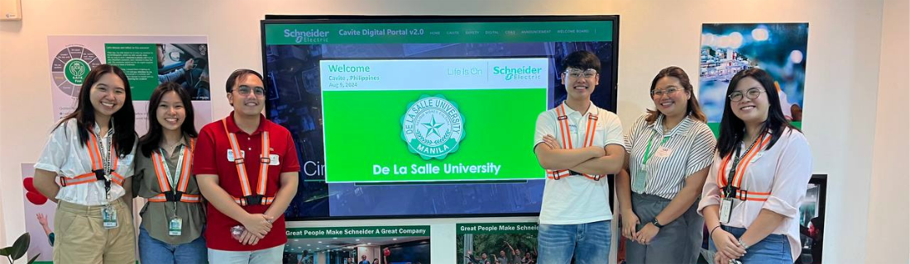

Projects
Project 01
What Makes Users Trust — and Keep Using — AI Chatbots?
Multidimensional Trust Framework for LLMs — Undergraduate Thesis, De La Salle University
Built an R + Python data pipeline for a 30-day longitudinal study of 300+ participants, processing hundreds of thousands of raw data points into an analysis-ready dataset. Applied CB-SEM and statistical analysis to quantify what drives AI adoption, then translated the results into A/B-tested product design recommendations.

Project 02
Building an ERP System to Connect a Manufacturer's Core Operations
End-to-End ERP Application — Systems Design Course, De La Salle University
Designed and built an ERP application for a local electrical-equipment manufacturer, implementing its Order-to-Cash, Procure-to-Pay, and Plan-to-Stock workflows end to end. Mapped how data moves between modules, then replaced manual, error-prone steps with automated input forms, calculations, and reporting — improving traceability and audit readiness across the business.
Project 03
Cutting Procurement Lead Time With Process Analysis & Simulation
Undergraduate Capstone — Schneider Electric × De La Salle University
A 7-month collaboration between our university engineering team and Schneider Electric Philippines to optimize the company's end-of-life component procurement process. Ran a gap analysis mapping workflows and KPIs to expose bottlenecks, then used systems modeling and Monte Carlo simulation to validate process changes projected to cut procurement lead time by 22.91% and save roughly Php 4M annually.
